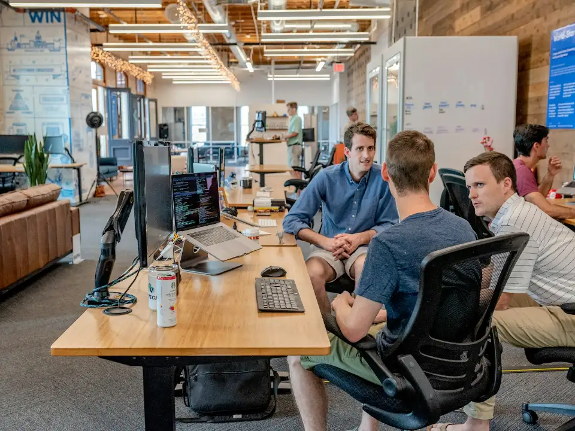

LIVE DESK • 24/7 SRE
ASIA-PACIFIC COMMAND
Salem & Parali Hub
Core infrastructure architecture, high-frequency SRE telemetry, and zero-downtime database cutovers.
Tell us where the signal gets noisy. We'll reply with the right next conversation, not a generic sales script.

You do not need a polished brief. Tell us what changed, what is at risk, and what decision feels blocked. A senior operator will review your note before replying.
For partnerships, speaking, and questions that do not need a route audit.
Complex questions may take longer, but we will always acknowledge your note promptly.
We support distributed teams worldwide with clear overlap and written continuity.
A senior operator reviews your note before we get on a call.
A focused route audit with the people closest to the problem.
A next step you can use whether or not we work together.
Direct, actionable clarity without gatekeeping or generic sales decks. We partner directly with technical founders, VP of Engineering, and SRE leaders to unblock stalled migrations, isolate runaway cloud spend, and harden critical clusters.
Connect directly with a principal systems architect for an objective, zero-obligation review of your technical topology.
Ask an Architect DirectlyYes. Most of our work is alongside an existing team. We add route clarity, specialist depth, and a calmer operating rhythm.
Absolutely. A focused workload is often the best way to prove the route before expanding it across a platform.
We are remote-first and work across time zones, with a bias toward clear written communication.
Distributed site reliability engineers and principal infrastructure architects aligned across prime timezone corridors.
Core infrastructure architecture, high-frequency SRE telemetry, and zero-downtime database cutovers.
Enterprise FinOps continuous allocation audits, multi-cloud Kubernetes peering, and executive RFPs.
Zero-trust WireGuard interconnects, GDPR/SOC 2 CI/CD compliance guardrails, and latency optimization.
Clear contractual guarantees and response velocities tailored to incident severity and architecture advisory scopes.
Deep inspection of your existing cloud topology, FinOps waste attribution, and infrastructure RFP evaluations.
 SEV-1 INCIDENT
SEV-1 INCIDENT
Immediate incident commander dispatch for cluster split-brains, network partitions, and catastrophic outages.
Continuous co-engineering with your internal squad via shared Slack/Teams channels and proactive runbook automation.
Skip the sales team. Reach out directly to the principal engineer heading the discipline matching your architectural challenge.

Specializes in container-level pod billing attribution, spot arbitrage, and slashing multi-cloud waste spend.

Specializes in CDC bidirectional replication, Postgres multi-region failover, and high-throughput data pipelines.

Specializes in WireGuard encrypted interconnects, kernel eBPF container defense, and automated compliance evidence.